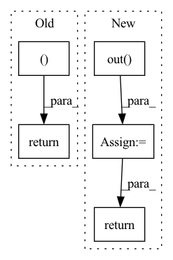

Pattern ID :2397
Before Change
v = self.NIN_2(h)
w = torch.einsum("bchw,bcij->bhwij", q, k) * (int(C) ** (-0.5))
w = torch.reshape(w, (B, H, W, H * W ))
w = F.softmax(w, dim=-1)
w = torch.reshape(w, (B, H, W, H, W))
h = torch.einsum("bhwij,bcij->bchw", w, v)
h = self.NIN_3(h)
return x + h
class Upsample(nn.Module):After Change
attn = attn.view(batch, n_head, height, width, height, width)
out = torch.einsum("bnhwyx, bncyx -> bnchw", attn, value).contiguous()
out = self.out( out.view(batch, channel, height, width))
return out + input
class ResnetBlocWithAttn(nn.Module):In pattern: SUPERPATTERN
Frequency: 4
Non-data size: 5
Instances Fragment ID: 14506137
Project Name: janspiry/image-super-resolution-via-iterative-refinement
Commit Name: 1a5a8bc409a8b8e072eb2bf25330d4662fd279c4
Time: 2021-08-09
Author: lw_jiang@foxmail.com
File Name: model/ddpm_modules/unet.py
M Class Name: AttnBlock
N Class Name: SelfAttention
M Method Name: forward(2)
N Method Name: forward(2)
M Parent Class: nn.Module
N Parent Class: nn.Module
M File Name: model/ddpm_modules/unet.py
N File Name: model/ddpm_modules/unet.py
M Start Line: 125
M End Line: 136
N Start Line: 111
N End Line: 128
Before Change
// Collect valid
// valid_0 = (pers1 != 0).all(-1)
return x + self.bn(x0), x_dim1
class FakeSetTopoLayer(nn.Module):
def __init__(self, n_features, n_filtrations, mlp_hidden_dim, aggregation_fn):After Change
if self.residual_and_bn:
x0 = x + self.bn(x0)
else:
x0 = self.out( torch.cat([x, x0], dim=-1))
return x0, x1
Fragment ID: 14506136
Project Name: borgwardtlab/togl
Commit Name: f6de25e187c5a78974edd07cec7fc20c675bbbc6
Time: 2021-02-02
Author: max.horn@bsse.ethz.ch
File Name: topognn/layers.py
M Class Name: SimpleSetTopoLayer
N Class Name: SimpleSetTopoLayer
M Method Name: forward(3)
N Method Name: forward(3)
M Parent Class: nn.Module
N Parent Class: nn.Module
M File Name: topognn/layers.py
N File Name: topognn/layers.py
M Start Line: 222
M End Line: 261
N Start Line: 238
N End Line: 270
Before Change
bias=False)
def forward(self, x, c, c_):
c_onehot = torch.cat((c, c_ ), dim=1).to(self.device)
width_size = x.size(3)
x = self.conv_layer_1(x)
x = self.down_sample_1(x)
x = self.down_sample_2(x)
x = x.contiguous().view(-1, 2304, width_size // 4)
x = self.down_conversion(x)
x = self.residual_1(x, c_onehot)
x = self.residual_2(x, c_onehot)
x = self.residual_1(x, c_onehot)
x = self.residual_1(x, c_onehot)
x = self.residual_1(x, c_onehot)
x = self.residual_1(x, c_onehot)
x = self.residual_1(x, c_onehot)
x = self.residual_1(x, c_onehot)
x = self.residual_1(x, c_onehot)
x = self.up_conversion(x)
x = x.view(-1, 256, 9, width_size // 4)
x = self.up_sample_1(x)
x = self.up_sample_2(x)
x = self.conv_1(x)
outputs_reshaped = x[:, :, : -1, :]
print(outputs_reshaped.shape)
return outputs_reshaped
class Discriminator(nn.Module):
def __init__(self, num_speakers=4):After Change
x = self.up_sample_1(x)
x = self.up_sample_2(x)
out = self.out( x)
return out
class Discriminator(nn.Module):
def __init__(self, num_speakers=4): Fragment ID: 14506133
Project Name: oscarshu0719/pytorch-stargan-vc2
Commit Name: 3af590c49514eccd6ca436f239c67118add8a86d
Time: 2020-05-15
Author: vm3y3rmp40719@gmail.com
File Name: model.py
M Class Name: Generator
N Class Name: Generator
M Method Name: forward(3)
N Method Name: forward(4)
M Parent Class: nn.Module
N Parent Class: nn.Module
M File Name: model.py
N File Name: model.py
M Start Line: 248
M End Line: 280
N Start Line: 266
N End Line: 269
Before Change
x = self.conv4(x)
temp = x.view(x.shape[0], -1)
output = self.output(temp)
return output, x
def train():
print("train......")After Change
x = x.view(x.shape[0], -1)
x = self.relu(self.fc1(x))
x = self.relu(self.fc2(x))
x = self.out( x)
return x
def train(): Fragment ID: 14506135
Project Name: ki-ljl/cnn-dogs-vs-cats
Commit Name: 8377a6a38f25ba56195c2396838201aa05b2f5cd
Time: 2022-03-26
Author: lijunliang.ki@gmail.com
File Name: CNN.py
M Class Name: cnn
N Class Name: cnn
M Method Name: forward(2)
N Method Name: forward(2)
M Parent Class: nn.Module
N Parent Class: nn.Module
M File Name: CNN.py
N File Name: CNN.py
M Start Line: 71
M End Line: 75
N Start Line: 81
N End Line: 85